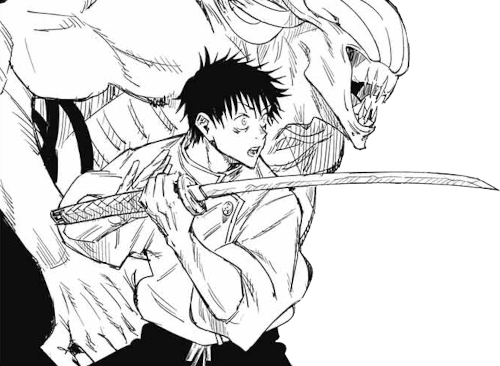

Yuta Okkotsu é um personagem central na série de mangá e anime "Jujutsu Kaisen".
Ele é o protagonista da história e desempenha um papel crucial na trama.
Abaixo, apresento uma biografia completa de Yuta Okkotsu até a minha última atualização em setembro de 2021:
Nome Completo:
YUTA OKKOTSU

Origens e Background:
Yuta Okkotsu é um adolescente japonês que nasceu com uma maldição amaldiçoada.
Sua infância foi marcada por eventos trágicos relacionados à maldição que habita seu corpo.
Após um incidente fatal envolvendo sua amiga Rika Orimoto, Yuta jurou controlar sua maldição e proteger aqueles ao seu redor.
Treinamento e Habilidades:
As habilidades de Yuta Okkotsu são fortemente influenciadas pela maldição amaldiçoada que habita seu corpo.
Alguns aspectos notáveis incluem: Ressurreição (Resonance): Yuta pode trazer de volta à vida aqueles que morreram recentemente,
desde que sua maldição não tenha se espalhado muito dentro da pessoa. Amizade com Rika: Rika Orimoto, a amiga falecida de Yuta,
se tornou uma maldição amaldiçoada poderosa que o acompanha e o ajuda em batalhas.
Papel na Série:
Yuta é o protagonista da história de "Jujutsu Kaisen".
Ele é recrutado para a Escola de Jujutsu de Tóquio, onde recebe treinamento para se tornar um jujutsu sorcerer.
Seu objetivo principal é controlar a maldição amaldiçoada que reside dentro dele,
que está diretamente ligada a Sukuna Ryoumen, o "Rei das Maldições".
Confrontos Notáveis:
Ao longo da série, Yuta enfrenta várias maldições e ameaças no mundo das maldições.
Ele também se envolve em confrontos com outros jujutsu sorcerers,
enquanto busca controlar sua maldição e entender seu passado.
Impacto e Legado:
Yuta Okkotsu é o elemento central da história de "Jujutsu Kaisen"
e sua jornada de autodescoberta e controle de sua maldição é fundamental para o enredo.
Seu relacionamento com Rika e sua conexão com Sukuna Ryoumen têm implicações significativas na trama da série.
Vale ressaltar que a série "Jujutsu Kaisen" estava em andamento na época da minha última atualização em setembro de 2021,
e mais informações sobre o personagem e sua história podem ter sido reveladas desde então.
Portanto, recomendo verificar fontes atualizadas para obter informações mais recentes sobre Yuta Okkotsu e seu papel na série.